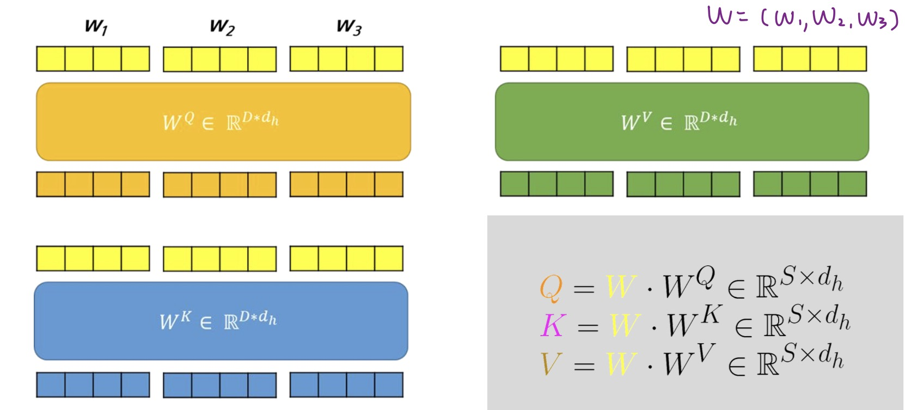
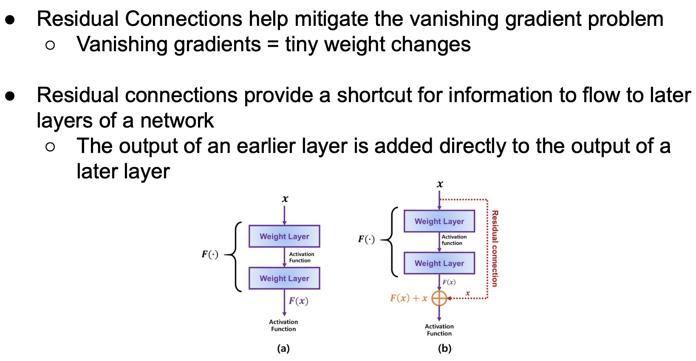
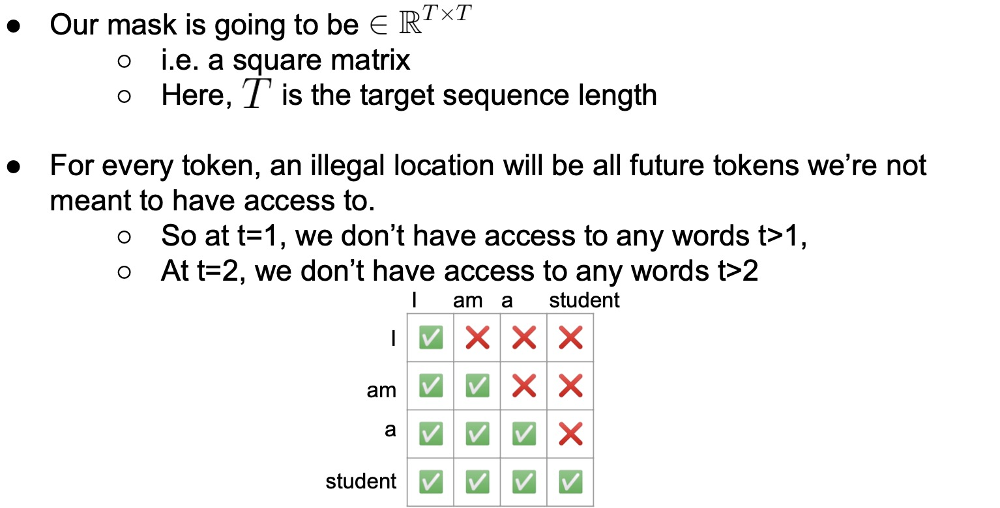
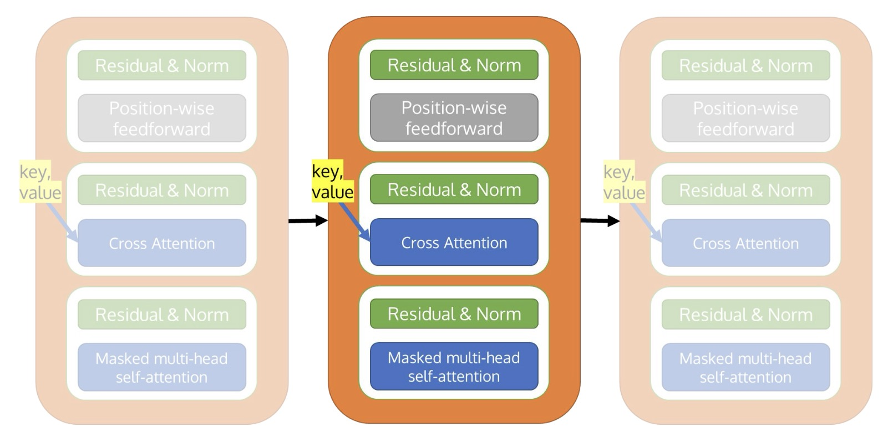
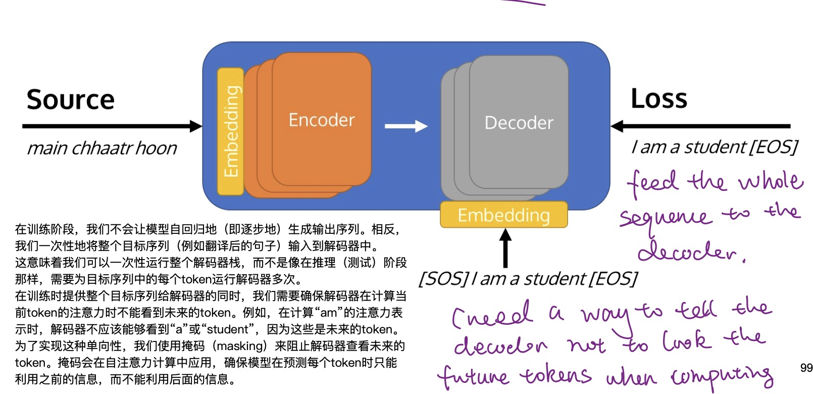
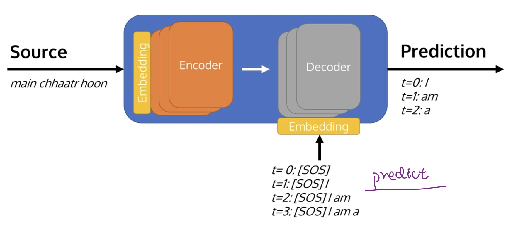

Transformer
Input Embedding: Embedding matrix: [V, D].
Transformers(编码器只运行一次处理整个输入序列,解码器必须为序列中的每个新token重新运行).

- V (Vocabulary Size)：词汇量大小，即模型能够识别的不同单词或标记（tokens）的数量
- D (Dimensionality)：嵌入维度，表示每个单词或标记被转换成的向量的大小，这个向量能够捕捉并表达单词的语义特征
Self-Attention
Mechanism that allows each input in a sequence to look at the whole sequence to compute a representation of the sequence.
- Q∈R^{S×d_n}, K^T∈R^{d_n×S}
- Attention (weight) matrix: σ(\frac{(QK^T)}{\sqrt{d_n}})∈R^{S×S} contain weights for how relevant each word is to others.
- Attention output: σ(\frac{(QK^T)}{\sqrt{d_n}})V∈R^{S×d_h}.
S：输入序列的长度（即共有多少个词），D：输入词嵌入的维度（单头中d_h=D）
①将输入序列的每个词向量转换成对应的查询向量，键向量和值向量

同理：K=W∙W^K; V=W∙W^V
② 对于每一个q_j，计算其与每一个键向量的相似
- Similarity function: q_j k_s.
- S_{1,i}=\frac{q_1 k_s}{\sqrt{d_n}}：the un-normalizaed similarity between the give query (q_1) and key values
- Softmax(σ)得出概率分布，表达了输入序列中每个词对当前词的重要性程度.
- S'_{1,i}=σ\frac{q_1 k_s}{\sqrt{d_n}}：the normalizaed similarity between the give query (q_1) and key values
- \sqrt{d_n}代表键向量的维度：当进行点积运算时,向量的维度越高,点积的结果会越大,会导致σ函数前的指数运算结果非常大,导致梯度消失或者爆炸的问题。因此需要除以\sqrt{d_n}
- z_j=∑_{s=1}^S(σ_s×v_s)=∑_{s=1}^S(σ(\frac{q_j k_s}{\sqrt{d_n}} v_s))：在考虑整个序列的上下文信息后，序列中的一个词的最终输出
Multi-head attention
- performs self-attention head amount of times in parallel.
- use different W^Q, W^K, W^V for each self-attention heads, each head d_h=\frac{D}{\#heads}（D：输入词嵌入的维度）.
Normalization
Layer Normalization
对于单个样本内的特征,计算这些特征的均值和方差,然后对该样本的所有特征进行归一化.

Gamma (γ) 和 Beta (β) 使用向量形式而不是标量： - 是用于对每个隐藏层的加权和进行再和位移的参数。我们不能假设R^{d}空间中的每个点都有相同的重要性。因此要对每个点分配不同的权重，以允许模型对每个输入特征的规模（scale）和偏移（shift）进行调整
Residual Connections

Position-wise Feedforward Network:
Position-wise means it is applying the same transformation to every element in the sequence. i.e. same weights applied to all tokens in the sequence.
e.g. d_{ff}=2048.
Positional Encodings
- Transformer处理输入是无序,需要一种方式来利用输入序列中词汇的顺序信息.
- Transformers are position invariant: inject position information into the embeddings.
e.g., sinusoids
- pos: position of the word in the sequence
- i: index of the dimension.
- input = Token\_embedding(x) + position\_embedding(s).
Masked Multi-head Self-attention
Masked MHA is a strategy to tell the model, during training, not to look at future tokens. use mask matrix，每一行代表一个时间步. 
Teacher forcing
Teacher forcing指模型在预测下一个单词时会被强制使用真实的前一个单词。这可以帮助加速训练并提高模型的稳定性。
- 当Teacher forcing的radio为100时，即强制在训练时始终使用真实的前一个单词
- 当Teacher forcing的radio比较低时，是为了鼓励模型学会更加独立的生成文本。
- Transformers使用Teacher forcing进行训练时, Teacher forcing的radio是可变的.
Cross Attention
- Every time decoding a token, we need to know which encoded words we should look at to decode the token.交叉注意力机制关注编码器的输出,以便融入输入序列的信息.
- Cross attention matrix：[T target sequence length, S source sequence length], 表示在生成目标语言的每个单词时，每个源语言单词对其的贡献大小.
- Query comes from the current decoder layer, and use the key, value tensors from the last encoder layer.
Encoder
Embedding + PE layer, followed by a for loop over the encoder layers. 编码器的输出是一个包含了整个输入序列的深层次表示的序列.

工作流程:

Decoder
使用自回归生成的方法来预测序列(每个时间步都会通过所有解码层,然后预测出一个token. mask确保模型在每一时间步只能访问到该时间步和它之前的token).

- Training: ⼀次性地将整个⽬标序列输⼊到解码器中，并使⽤mask来阻⽌解码器查看未来的token。

- Testing: 每个时间步都会基于之前所有时间步生成的输出来预测下一个输出。每个时间步都会依次通过所有的Decoder layer。

Differences between Encoder and Decoder:
- Use the Masked multi-head self-attention
- Use the Cross attention (use the key and value tansor from the encoder)
工作流程: